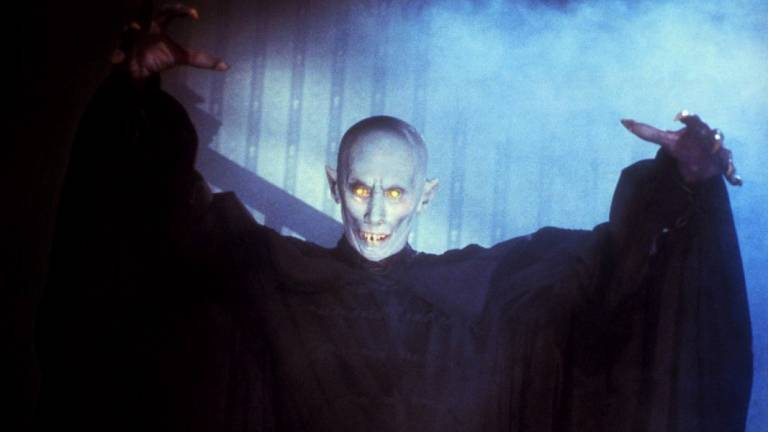

O príncipe cruel que inspirou o mito de Drácula, conhecido por sua brutalidade e sede de sangue.
Vampiros: os mortos-vivos
À noite, quando a lua se ergue e o silêncio domina, criaturas famintas emergem das sombras. São os vampiros, senhores da escuridão e da eternidade, condenados a viver entre os vivos, sedentos pelo sangue que sustenta sua imortalidade. Temidos e venerados, os vampiros são o reflexo do medo mais antigo da humanidade: o medo da morte… e daquilo que pode voltar dela.
Lore e Origens
As raízes do mito vampírico são tão antigas quanto as civilizações humanas.
Nas antigas culturas da Mesopotâmia e da Grécia, já existiam lendas sobre espíritos sugadores de sangue e mortos inquietos que retornavam para atormentar os vivos.
No leste europeu, especialmente entre os séculos XV e XVIII, surgiram as histórias que moldariam a figura do vampiro moderno: seres amaldiçoados, mortos que se levantam do túmulo para se alimentar da vida alheia.
Muitos acreditavam que o vampirismo era resultado de maldições, suicídios, possessões demoníacas ou punições divinas.
Foi nas neblinas frias da Transilvânia e nas florestas da Valáquia que o mito ganhou carne, dentes e nome: Drácula.
Características dos Vampiros
Os vampiros são seres envoltos em mistério e poder. Entre as suas principais características estão:
- Imortalidade - vivem eternamente, presos à noite e ao fardo da eternidade.
- Sede de sangue - o sangue humano é a essência que os mantém ativos e fortes.
- Força e velocidade sobrenaturais, sentidos aguçados e hipnose sedutora.
- Vulnerabilidade à luz do sol, símbolos sagrados e estacas no coração.
- Ausência de reflexo e incapacidade de cruzar correntes de água, segundo antigas tradições.
Muitos podem transformar-se em morcegos, controlar sombras ou ler mentes, dependendo da lenda. Mas acima de tudo, o vampiro é o mestre do encanto e do terror, um predador elegante disfarçado de nobreza.
Contos e Vampiros Famosos
Os vampiros conquistaram o imaginário através de histórias que atravessam os séculos:
O romance gótico que imortalizou o vampiro como figura aristocrática e sombria.
A vampira sedutora que antecedeu Drácula, símbolo do desejo proibido e da luxúria noturna.
A criatura monstruosa do cinema mudo, símbolo do horror puro.
Uma visão moderna e trágica do vampirismo como fardo eterno.
Cada história revela uma nova face do mito — ora bestial, ora poética, mas sempre amaldiçoada.